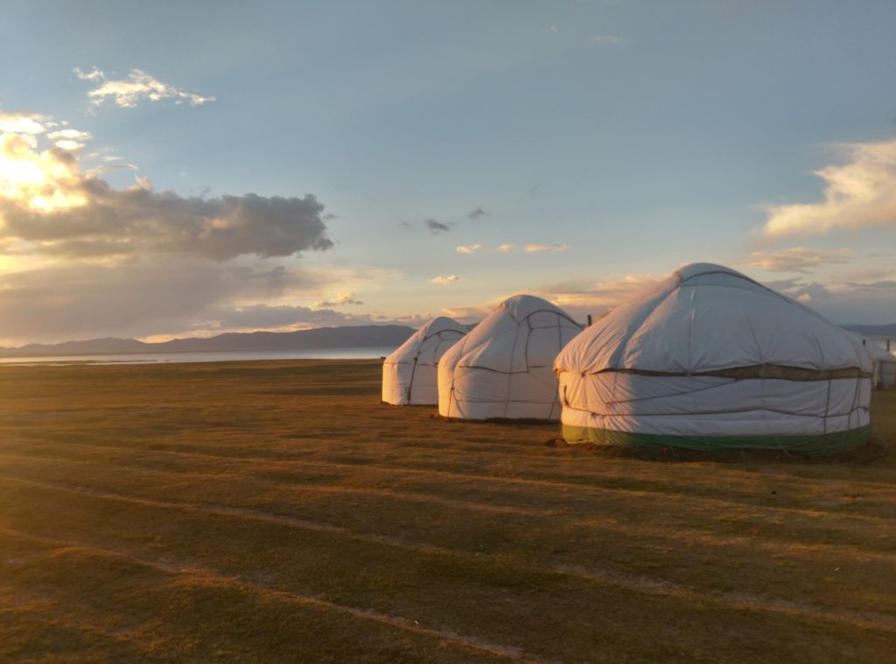
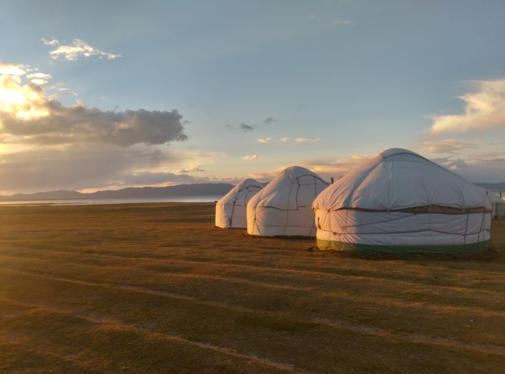

Озеро Сон-Куль (также Сонг-Куль, Сон-Кёль, Сонкуль и т.д) — это крупное
высокогорное озеро, второе по величине в Кыргызстане, которое находится в
Нарынской области,
примерно в 280 километрах от Бишкека.
Сон-Куль находится на высоте 3000 метров в большой межгорной долине, ограниченной с севера хребтом Сонкуль-Тоо
и хребтом Молдо-Тоо с юга. Озеро пресное и довольно глубокое — максимальная глубина озера 14 метров. Примерно
в середине ноября Сон-Куль замерзает и оттаивает только к середине апреля.
Местность вокруг озера весьма живописна, особенно в летний период. Сон-Куль окружают невысокие холмы, за
которыми проглядывают остроконечные пики и снега хребтов Центрального Тянь-Шаня. Из-за большой высоты здесь
совершенно отсутствуют деревья, так как растет в таких условиях только невысокая жесткая трава и
многочисленные эдельвейсы.
Хоть озеро по размерам и не очень велико, но его берега довольно сильно отличны друг от друга. Южный и
восточный берега совсем пологие и в некоторых местах заболочены, тогда как северный и западный берега довольно
крутые и дорога идущая вдоль озера петляет по холмам, то резко вздымаясь над уровнем воды, то также резко
опускаясь. Особенно приятно проехать по ней на велосипеде — именно с западного берега открывается лучший вид
на озеро.
Сон-Куль — довольно труднодоступное место, а потому антропогенное влияние здесь сведено к минимуму. Лишь в
летний период сюда приходят кочевые стойбища из сел, расположенных в соседней Джумгальской долине и из Нарына.
В остальное время долина Сон-Куля абсолютно необитаема.
На северном берегу озера расположена единственная каменная постройка во всей долине — мавзолей Тайлак
Баатыра, построенный в конце XIX века.
Озеро Сон-Куль является очень популярным у туристов местом. Здесь проходит большое количество туристических
маршрутов, а благодаря удобному географическому положению озера, путешествие из одной части страны в другую
вполне можно совместить с посещением Сон-Куля. Также Сон-Куль очень интересен тем, что летом здесь можно
наглядно увидеть в живую кочевнический быт и провести пару дней вдали от цивилизации.
 


Как добраться до Сон-Куля?
Путь на Сон-Куль довольно сложен. К озеру ведут 4 автомобильных перевала. Самый популярный и легкопроезжаемый — это Калмак-Ашуу (северо-восточная часть озера), поворот на который находится на трассе Бишкек-Торугарт, в 3-х километрах от села Сары-Булак. Также на озеро на автомобиле можно попасть через перевалы Терскей-Торпок (также его называют 33 попугая, находится в юго-восточной части озера), Молдо-Ашуу(южный берег озера) и Кара-Кече(юго-западный берег). Помимо автомобильный перевалов, к озеру ведут множество пешеходных перевалов, на которых также можно путешествовать на велосипеде или лошадях. К их числу относятся перевалы Туз-Ашуу, Чиль-Бель и Узбек.